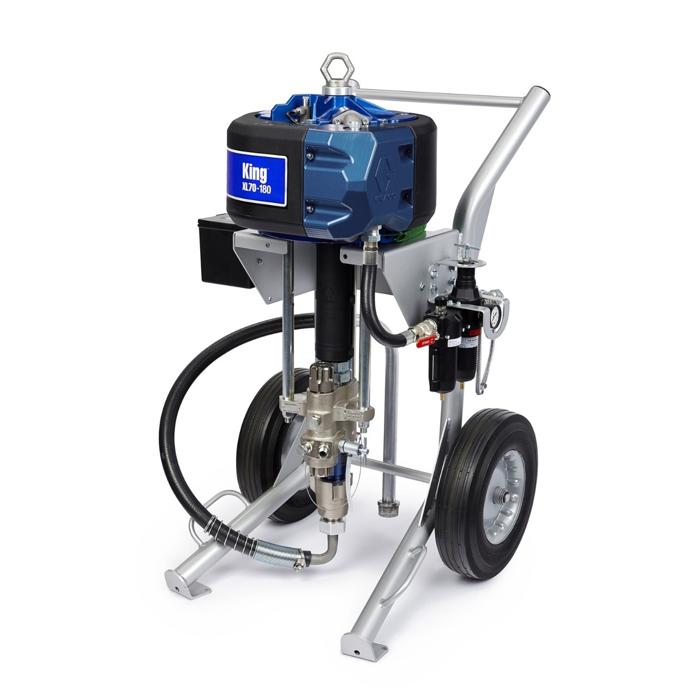
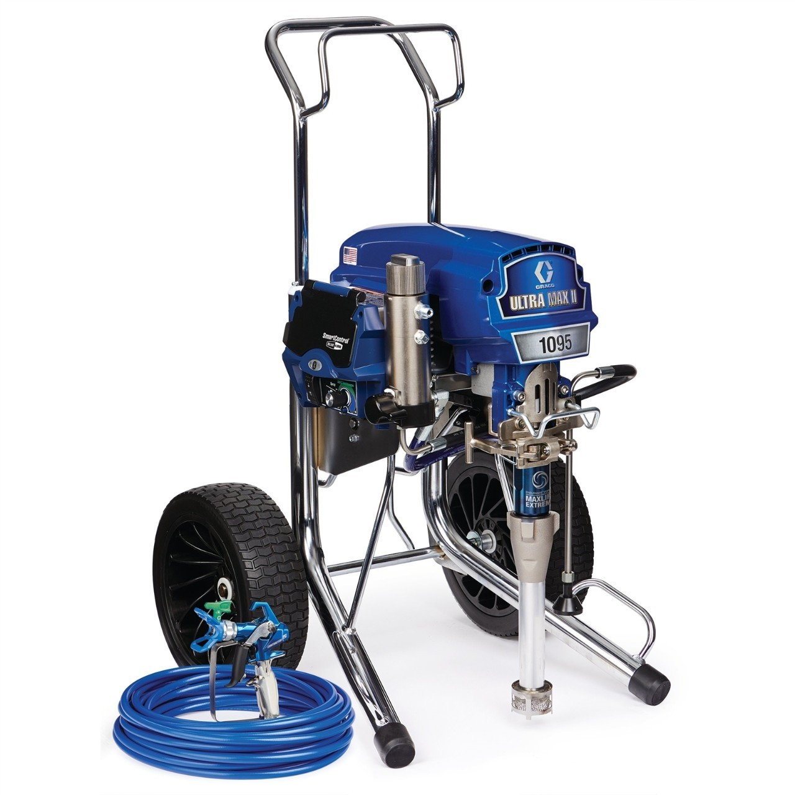
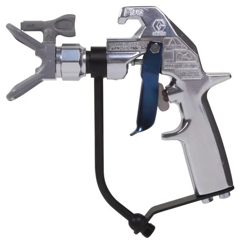
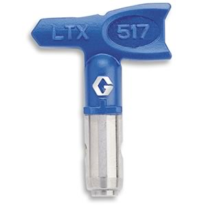
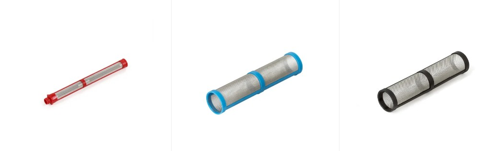
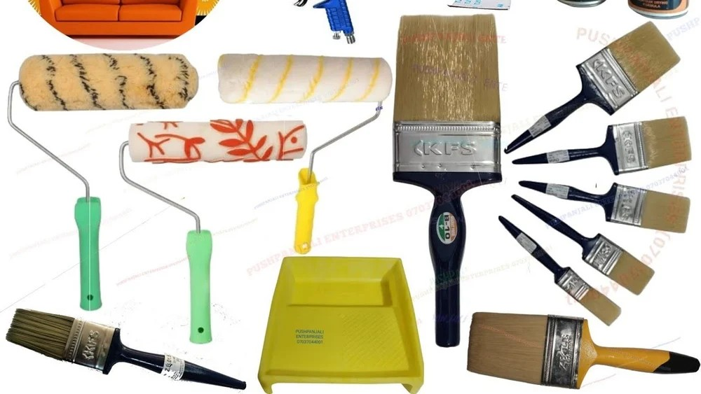

Hydraulic, pneumatic and petrol-driven pumps used for heavy-duty industrial spray work.

Graco King & GH Series
King 70:1 / 60:1 / 45:1 · GH 833 · GH 733 Big Rig · GMax 7900 & 5900
- Hydraulic and air-operated pumps for high-build epoxy, polyurethane and high-solids coatings.
- Witnessed setting of fluid pressure versus atomisation quality for different DFT requirements.
- Daily checks on air motor lubrication, ice-free operation and relief valve condition.
- Verification of correct fluid intake, suction strainers and return line arrangements.

Graco Electric Airless Spray Machines
Ultra Max II · Ultra 495 PC Pro · 595 PC Pro · 695 / 795 / 1095 Hi-Boy
- Ideal for medium to high production coating jobs using epoxy, PU and acrylic systems.
- Inspection of motor load, pressure control accuracy and smooth pump stroke.
- Verification of SmartControl system for stable spray pattern without pulsation.
- Checking pump packings, rods, displacement pump lubrication and filter mesh alignment.
- Ensuring correct hose length-to-pressure ratio for long-range applications.
Inspector’s focus: verifying that the selected pump capacity, pressure ratio and hose length are
suitable for the coating viscosity, ambient conditions and required production rate, while staying within
manufacturer limits.
3. Airless Spray Guns & Triggers
High-pressure guns used for fine atomisation, pattern control and safe operations.

High-Pressure Guns (Up to 500+ bar)
Graco XTR, Silver Plus, XHF · Wagner Vector Grip/Pro · Titan RX-Pro · Wiwa 500 / 700
- Inspection of trigger lock functionality before each shift.
- Verification of correct gun filter mesh size based on tip size and coating type.
- Monitoring for needle tip wear, internal leakage and packing gland leakage.
- Ensuring gun handle grounding for static dissipation in flammable environments.
Common issues observed: blocked filters causing pulsation, damaged tip seals leading to tails,
and missing trigger locks creating serious safety hazards. These are highlighted during site toolbox talks.
4. Spray Tips & Nozzles
Critical components controlling fan width, output and film build on each pass.

Airless Tips – Regular & Fine Finish
Graco RAC X (FFLP, LP, PAA) · Wagner TradeTip 3 · Titan TR1 / TR2
- Routine inspection of tip engraving (e.g. 417, 521, 643) to match design WFT & coverage.
- Use of tip wear gauge to identify oversized or eroded tips causing over-consumption.
- Checking tip guards, seals and correct orientation of the tip for spray / clean positions.
- Verification that tip selection aligns with TDS recommended WFT / DFT.
5. High-Pressure Hoses & Fittings
Safe transfer of high-pressure paint from pump to gun with minimum pressure loss.

Hoses, Whips & Connections
1/4", 3/8", 1/2" main hose · 3/16" whip hose · rated 225–350 bar
- Visual inspection for cuts, kinks, blistering and damaged outer jackets before pressurising.
- Checking correct pressure rating & manufacturing date printed on hose.
- Verification of whip checks, safety clips and secure couplings at all critical joints.
- Periodic witnessing of pressure tests following company procedures.
| Item |
Inspector Focus |
Risk if Not Controlled |
| Main high-pressure hose |
Rating, condition, routing & protection from sharp edges |
Hose burst, injection injury, sudden atomisation loss |
| Whip hose |
Flexibility, no twisting, correct length near gun |
Poor gun control, operator fatigue, pattern defects |
| Couplings & fittings |
Tightness, safety clips & seals |
Leakage, paint spray-outs, environmental contamination |
6. Filtration & Manifolds
Clean paint flow to prevent tip blockages, surface defects and downtime.

Multi-Stage Filtration System
Pump inlet strainer · Manifold filter · Gun filter
- Pump inlet strainers 30–100 mesh used to stop large contaminants and skinning.
- Manifold filters and gun filters 60–200 mesh selected based on coating and tip size.
- Inspector verifies daily cleaning & re-assembly recorded in crew checklist.
- Special attention given to zinc-rich primers & high-solids epoxies prone to settling.
7. Accessories & Supporting Equipment
Tools that improve access, safety and application consistency.

Essential Airless Accessories
- Tip guards, extension poles (up to 6 ft) for overhead and hard-to-reach areas.
- Fluid & air pressure gauges (0–600 bar) for verifying operating range.
- Throat Seal Liquid (TSL) levels monitored to protect pump packings.
- Pneumatic agitators, drum strainers and mixing paddles for uniform coating consistency.
Value to the project: correct configuration of accessories allows safe access to complex
structures, reduces overspray, improves productivity and keeps the finished coating within specified DFT.
8. Safety, QA/QC & Daily Inspection Checklist
Every shift begins with a pre-start safety & equipment inspection witnessed or carried out by
the inspector. This ensures that the airless system is safe, compliant and ready for high-pressure operation.
- Confirmation that all personnel wear appropriate PPE (gloves, goggles, coveralls, safety shoes).
- Verification of respiratory protection when using solvent-based or isocyanate coatings.
- Ensuring spray area has adequate ventilation and exclusion zones.
- Checking that earthing / bonding is in place for equipment and drums.
Daily Checklist (Sample)
| Item |
Status |
| Pump, hoses & gun visual inspection |
✔ Checked / defects recorded |
| Pressure test / leak check |
✔ Satisfactory / NCR raised if not |
| Filters cleaned & reinstalled |
✔ Logged in daily report |
| Tip size & WFT measurement vs TDS |
✔ Verified on first panel / test area |
| Housekeeping & safe hose routing |
✔ Area accepted for spraying |
Standards & Reference: Work activities are aligned with project specifications, BGAS-CSWIP
painting inspection practices, ISO/SSPC standards for surface preparation & coating application, and the
equipment manufacturers’ instructions (Graco, Wiwa, Wagner, Titan, etc.).